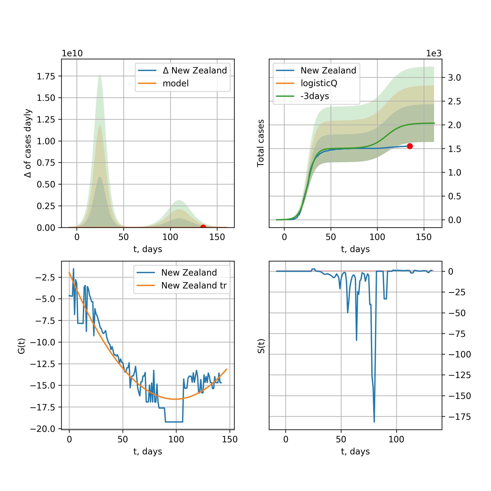

Multi-logistic model of COVID-19 dynamics
Model, code, results
Project maintained by algmaknick Hosted on GitHub Pages — Theme by mattgraham
World

World data at: 2020-05-23
+3 day model MAPE: 0.021124
model: bi-Richards
coeffs: [ 7.07503531e+06 3.50151753e+00 -4.46901950e+01 1.00800346e-02]
S.Korea scenario coeffs: [0.36242246, 2.56241634, 1.84890887, 0.13324732]
rational stdev: 0.246634
forecast at the end of period: +484 days
deltaDaycases: 5164
total cases: 9506111 ± 2344527
total death: 605022 ± 447656
bi-Richards approximation splitting point: 55
trend coefficient of determination: 0.356734
intercept: -1.903919
slope: -0.041482
trend coefficient of determination: 0.922313
intercept: -0.635112
slope: -0.031326
European Union

European Union data at: 2020-05-23
+3 day model MAPE: 0.009341
model: logisticQ
coeffs: [ 1.12527796e+06 4.95002125e-07 5.05918312e+01 -2.18988153e+05]
S.Korea scenario coeffs: [0.35416971, 0.02606324, 4.35859408, 19.30413219]
rational stdev: 0.426750
forecast at the end of period: +259 days
deltaDaycases: 13
total cases: 1523571 ± 650184
total death: 163145 ± 208866
trend coefficient of determination: 0.989292
intercept_: -3.1021165559413344
coeffs_: [ 0. -0.32113739 0.00159853]
USA

USA data at: 2020-05-23
+3 day model MAPE: 0.012055
model: Richards
coeffs: [ 1.98955314e+06 4.27420779e+00 -5.82382324e+01 1.07657205e-02]
S.Korea scenario coeffs: [0.36242246, 2.56241634, 1.84890887, 0.13324732]
rational stdev: 0.336641
forecast at the end of period: +476 days
deltaDaycases: 249
total cases: 2694686 ± 907140
total death: 159536 ± 161118
trend coefficient of determination: 0.951757
intercept: -1.030670
slope: -0.045036
Spain

Spain data at: 2020-05-23
+3 day model MAPE: 0.003813
model: Richards
coeffs: [ 2.91098660e+05 9.27103283e+00 -5.17604328e+01 6.70996103e-03]
S.Korea scenario coeffs: [0.36242246, 2.56241634, 1.84890887, 0.13324732]
rational stdev: 0.228456
forecast at the end of period: +294 days
deltaDaycases: 113
total cases: 391143 ± 89358
total death: 39725 ± 27226
trend coefficient of determination: 0.949274
intercept: -0.733314
slope: -0.060090
Italy

Italy data at: 2020-05-23
+3 day model MAPE: 0.001391
model: Richards
coeffs: [ 2.35863022e+05 5.95591334e+00 -5.05954424e+01 1.00832787e-02]
S.Korea scenario coeffs: [0.36242246, 2.56241634, 1.84890887, 0.13324732]
rational stdev: 0.069508
forecast at the end of period: +266 days
deltaDaycases: 141
total cases: 314220 ± 21840
total death: 44852 ± 9352
trend coefficient of determination: 0.984771
intercept: -1.090083
slope: -0.057004
United Kingdom

United Kingdom data at: 2020-05-23
+3 day model MAPE: 0.002655
model: Richards
coeffs: [ 3.10937400e+05 3.73748330e+00 -5.87600282e+01 1.27394506e-02]
S.Korea scenario coeffs: [0.36242246, 2.56241634, 1.84890887, 0.13324732]
rational stdev: 0.125564
forecast at the end of period: +364 days
deltaDaycases: 153
total cases: 413802 ± 51958
total death: 59016 ± 22230
trend coefficient of determination: 0.955752
intercept: -1.393935
slope: -0.045509
France

France data at: 2020-05-23
+3 day model MAPE: 0.003566
model: Richards
coeffs: [1.80503743e+05 3.59003142e-01 1.76102646e+01 2.76877879e-01]
S.Korea scenario coeffs: [0.36242246, 2.56241634, 1.84890887, 0.13324732]
rational stdev: 0.302241
forecast at the end of period: +126 days
deltaDaycases: 157
total cases: 241185 ± 72896
total death: 37448 ± 33954
trend coefficient of determination: 0.947264
intercept: -2.429735
slope: -0.089167
Germany

Germany data at: 2020-05-23
+3 day model MAPE: 0.004310
model: Richards
coeffs: [ 1.78205381e+05 1.01905573e+01 -4.23349230e+01 8.00537784e-03]
S.Korea scenario coeffs: [0.36242246, 2.56241634, 1.84890887, 0.13324732]
rational stdev: 0.533512
forecast at the end of period: +196 days
deltaDaycases: 106
total cases: 238883 ± 127447
total death: 11103 ± 17770
trend coefficient of determination: 0.956286
intercept: -1.176672
slope: -0.066792
Turkey

Turkey data at: 2020-05-23
+3 day model MAPE: 0.006544
model: Richards
coeffs: [ 1.61234317e+05 5.77708690e+00 -3.44331101e+01 1.25674474e-02]
S.Korea scenario coeffs: [0.36242246, 2.56241634, 1.84890887, 0.13324732]
rational stdev: 0.235071
forecast at the end of period: +196 days
deltaDaycases: 226
total cases: 209741 ± 49304
total death: 5803 ± 4092
trend coefficient of determination: 0.775257
intercept: -0.978832
slope: -0.058549
Russia

Russia data at: 2020-05-23
+3 day model MAPE: 0.009956
model: Richards
coeffs: [5.01907700e+05 1.74328626e-01 2.97424226e+01 3.89020548e-01]
S.Korea scenario coeffs: [0.36242246, 2.56241634, 1.84890887, 0.13324732]
rational stdev: 0.181940
forecast at the end of period: +224 days
deltaDaycases: 401
total cases: 665668 ± 121111
total death: 6714 ± 3664
trend coefficient of determination: 0.986474
intercept: -4.090153
slope: -0.074025
Iran

Iran data at: 2020-05-23
+3 day model MAPE: 0.013250
model: bi-Richards
coeffs: [7.08042627e+04 4.93777198e+00 2.81489289e+01 1.54119042e-02]
S.Korea scenario coeffs: [0.36242246, 2.56241634, 1.84890887, 0.13324732]
rational stdev: 0.306429
forecast at the end of period: +308 days
deltaDaycases: 42
total cases: 197270 ± 60449
total death: 10872 ± 9994
bi-Richards approximation splitting point: 75
trend coefficient of determination: 0.949240
intercept: -0.938681
slope: -0.055511
trend coefficient of determination: 0.272822
intercept: -5.276733
slope: 0.011222
Brazil

Brazil data at: 2020-05-23
+3 day model MAPE: 0.051681
model: logisticQ
coeffs: [ 1.07271191e+06 8.15573149e-06 8.39008231e+01 -9.21613252e+03]
S.Korea scenario coeffs: [0.35416971, 0.02606324, 4.35859408, 19.30413219]
rational stdev: 0.399343
forecast at the end of period: +329 days
deltaDaycases: 2292
total cases: 1378330 ± 550427
total death: 87509 ± 104838
trend coefficient of determination: 0.885197
intercept_: -4.222059943851653
coeffs_: [ 0. -0.27733301 0.00175911]

Brazil data at: 2020-05-23
+3 day model MAPE: 0.028864
model: Richards
coeffs: [1.51968737e+07 1.57104631e-01 3.34493614e+01 1.11731681e-01]
S.Korea scenario coeffs: [0.36242246, 2.56241634, 1.84890887, 0.13324732]
rational stdev: 0.355983
forecast at the end of period: +1064 days
deltaDaycases: 3223
total cases: 20137428 ± 7168577
total death: 1278514 ± 1365386
trend coefficient of determination: 0.180707
intercept: -2.639902
slope: -0.024000
Canada

Canada data at: 2020-05-23
+3 day model MAPE: 0.002130
model: Richards
coeffs: [ 1.06719418e+05 2.20421324e+00 -5.88890642e+01 1.98933289e-02]
S.Korea scenario coeffs: [0.36242246, 2.56241634, 1.84890887, 0.13324732]
rational stdev: 0.175961
forecast at the end of period: +420 days
deltaDaycases: 29
total cases: 143353 ± 25224
total death: 10894 ± 5750
trend coefficient of determination: 0.957194
intercept: -1.600624
slope: -0.045939
Belgium

Belgium data at: 2020-05-23
+3 day model MAPE: 0.002538
model: Richards
coeffs: [ 5.85559540e+04 1.35086128e+00 -1.79926631e+01 5.22754230e-02]
S.Korea scenario coeffs: [0.36242246, 2.56241634, 1.84890887, 0.13324732]
rational stdev: 0.564115
forecast at the end of period: +196 days
deltaDaycases: 49
total cases: 77653 ± 43805
total death: 12626 ± 21367
trend coefficient of determination: 0.948192
intercept: -1.479217
slope: -0.061702
Peru

Peru data at: 2020-05-23
+3 day model MAPE: 0.038279
model: logisticQ
coeffs: [ 1.57887782e+05 2.65974000e-06 5.90907717e+01 -3.51720762e+04]
S.Korea scenario coeffs: [0.35416971, 0.02606324, 4.35859408, 19.30413219]
rational stdev: 0.380135
forecast at the end of period: +238 days
deltaDaycases: 217
total cases: 208841 ± 79387
total death: 6085 ± 6939
trend coefficient of determination: 0.975012
intercept_: -3.791172263500232
coeffs_: [ 0. -0.27062017 0.00166977]
Netherlands

Netherlands data at: 2020-05-23
+3 day model MAPE: 0.001407
model: Richards
coeffs: [4.62133044e+04 4.72499910e-01 2.87734125e+00 1.54949051e-01]
S.Korea scenario coeffs: [0.36242246, 2.56241634, 1.84890887, 0.13324732]
rational stdev: 0.155904
forecast at the end of period: +196 days
deltaDaycases: 24
total cases: 61961 ± 9659
total death: 7989 ± 3736
trend coefficient of determination: 0.975258
intercept: -1.699486
slope: -0.072410
India

India data at: 2020-05-23
+3 day model MAPE: 0.021475
model: Richards
coeffs: [ 1.98601422e+06 5.38470698e-01 -5.81012917e+01 3.27928519e-02]
S.Korea scenario coeffs: [0.36242246, 2.56241634, 1.84890887, 0.13324732]
rational stdev: 0.361937
forecast at the end of period: +924 days
deltaDaycases: 938
total cases: 2525591 ± 914104
total death: 74332 ± 80710
trend coefficient of determination: 0.522436
intercept: -1.761796
slope: -0.021411
Switzerland

Switzerland data at: 2020-05-23
+3 day model MAPE: 0.002787
model: logisticQ
coeffs: [ 2.99796842e+04 7.39401473e-07 2.59178556e+01 -1.95877032e+05]
S.Korea scenario coeffs: [0.35416971, 0.02606324, 4.35859408, 19.30413219]
rational stdev: 0.341473
forecast at the end of period: +84 days
deltaDaycases: 18
total cases: 40346 ± 13777
total death: 2501 ± 2562
trend coefficient of determination: 0.982963
intercept_: -3.8713053117447327
coeffs_: [ 0. -0.31090068 0.00182669]
Ecuador

Ecuador data at: 2020-05-23
+3 day model MAPE: 0.007271
model: Richards
coeffs: [ 6.31292358e+04 2.68463699e+00 -9.55417558e+01 1.16701835e-02]
S.Korea scenario coeffs: [0.36242246, 2.56241634, 1.84890887, 0.13324732]
rational stdev: 0.310946
forecast at the end of period: +644 days
deltaDaycases: 11
total cases: 84917 ± 26404
total death: 7250 ± 6763
trend coefficient of determination: 0.201017
intercept: -1.997190
slope: -0.041585
Portugal

Portugal data at: 2020-05-23
+3 day model MAPE: 0.009657
model: Richards
coeffs: [ 3.07818860e+04 7.58523313e+00 -4.52691689e+01 8.66418858e-03]
rational stdev: 0.183452
forecast at the end of period: +224 days
deltaDaycases: 0
total cases: 30781 ± 5646
total death: 1315 ± 723
trend coefficient of determination: 0.895545
intercept: -0.881173
slope: -0.057910
Saudi Arabia

Saudi Arabia data at: 2020-05-23
+3 day model MAPE: 0.013446
model: Richards
coeffs: [ 2.96065604e+05 7.46539821e-01 -3.89049933e+01 3.53050556e-02]
S.Korea scenario coeffs: [0.36242246, 2.56241634, 1.84890887, 0.13324732]
rational stdev: 0.280892
forecast at the end of period: +672 days
deltaDaycases: 115
total cases: 389691 ± 109461
total death: 2105 ± 1773
trend coefficient of determination: 0.094557
intercept: -2.233303
slope: -0.015684
Sweden

Sweden data at: 2020-05-23
+3 day model MAPE: 0.008552
model: Richards
coeffs: [ 4.74701345e+04 2.26409208e+00 -6.86561562e+01 1.53434265e-02]
S.Korea scenario coeffs: [0.36242246, 2.56241634, 1.84890887, 0.13324732]
rational stdev: 0.265789
forecast at the end of period: +434 days
deltaDaycases: 39
total cases: 60947 ± 16199
total death: 7330 ± 5844
trend coefficient of determination: 0.834828
intercept: -1.381820
slope: -0.036842
Pakistan

Pakistan data at: 2020-05-23
+3 day model MAPE: 0.020812
model: Richards
coeffs: [ 9.95795536e+05 2.87914174e-01 -2.89760706e+01 5.61350870e-02]
S.Korea scenario coeffs: [0.36242246, 2.56241634, 1.84890887, 0.13324732]
rational stdev: 0.389124
forecast at the end of period: +1204 days
deltaDaycases: 154
total cases: 1327559 ± 516584
total death: 27874 ± 32539
trend coefficient of determination: 0.324454
intercept: -2.244911
slope: -0.019118
Ireland

Ireland data at: 2020-05-23
+3 day model MAPE: 0.005464
model: logisticQ
coeffs: [ 2.42597802e+04 1.96164066e-06 3.53872035e+01 -6.40530147e+04]
S.Korea scenario coeffs: [0.35416971, 0.02606324, 4.35859408, 19.30413219]
rational stdev: 0.317690
forecast at the end of period: +126 days
deltaDaycases: 29
total cases: 32373 ± 10284
total death: 2112 ± 2012
trend coefficient of determination: 0.982122
intercept_: -3.849132391771551
coeffs_: [ 0. -0.26827451 0.00151424]
Mexico

Mexico data at: 2020-05-23
+3 day model MAPE: 0.017516
model: Richards
coeffs: [ 4.43885762e+05 5.86782230e-01 -5.64849069e+01 3.82785673e-02]
S.Korea scenario coeffs: [0.36242246, 2.56241634, 1.84890887, 0.13324732]
rational stdev: 0.146695
forecast at the end of period: +784 days
deltaDaycases: 148
total cases: 584016 ± 85672
total death: 63664 ± 28017
trend coefficient of determination: 0.858442
intercept: -1.972251
slope: -0.026573
Singapore

Singapore data at: 2020-05-23
+3 day model MAPE: 0.021357
model: bi-Richards
coeffs: [2.29464241e+04 1.04591608e+01 2.31334348e+01 7.63550905e-03]
S.Korea scenario coeffs: [0.36242246, 2.56241634, 1.84890887, 0.13324732]
rational stdev: 0.270833
forecast at the end of period: +294 days
deltaDaycases: 10
total cases: 40179 ± 10881
total death: 29 ± 23
bi-Richards approximation splitting point: 60
trend coefficient of determination: 0.125122
intercept: -2.318421
slope: -0.021599
trend coefficient of determination: 0.541510
intercept: -0.467949
slope: -0.028396
Chile

Chile data at: 2020-05-23
+3 day model MAPE: 0.054700
model: bi-Richards
coeffs: [ 6.66765597e+05 1.05442969e+00 -6.45873547e+00 2.99892804e-02]
S.Korea scenario coeffs: [0.36242246, 2.56241634, 1.84890887, 0.13324732]
rational stdev: 0.288045
forecast at the end of period: +749 days
deltaDaycases: 78
total cases: 917209 ± 264197
total death: 9439 ± 8156
bi-Richards approximation splitting point: 40
trend coefficient of determination: 0.013964
intercept: -2.185503
slope: -0.016453
trend coefficient of determination: 0.271491
intercept: -3.878085
slope: 0.010014
Israel

Israel data at: 2020-05-23
+3 day model MAPE: 0.001731
model: Richards
coeffs: [ 1.70299267e+04 6.17221460e+00 -3.61342481e+01 1.43946956e-02]
S.Korea scenario coeffs: [0.36242246, 2.56241634, 1.84890887, 0.13324732]
rational stdev: 0.160208
forecast at the end of period: +196 days
deltaDaycases: 4
total cases: 23039 ± 3691
total death: 384 ± 184
trend coefficient of determination: 0.928380
intercept: -1.036940
slope: -0.091779
Austria

Austria data at: 2020-05-23
+3 day model MAPE: 0.005162
model: logisticQ
coeffs: [ 1.55894972e+04 7.71316810e-07 2.37847132e+01 -2.40159873e+05]
S.Korea scenario coeffs: [0.35416971, 0.02606324, 4.35859408, 19.30413219]
rational stdev: 0.323633
forecast at the end of period: +70 days
deltaDaycases: 7
total cases: 21031 ± 6806
total death: 815 ± 791
trend coefficient of determination: 0.981322
intercept_: -2.7879761102567944
coeffs_: [ 0. -0.35402669 0.00241112]
Belarus

Belarus data at: 2020-05-23
+3 day model MAPE: 0.008166
model: Richards
coeffs: [ 6.00765568e+04 2.11550499e+00 -5.71243274e+01 2.07474108e-02]
S.Korea scenario coeffs: [0.36242246, 2.56241634, 1.84890887, 0.13324732]
rational stdev: 0.145097
forecast at the end of period: +364 days
deltaDaycases: 45
total cases: 78597 ± 11404
total death: 432 ± 188
trend coefficient of determination: 0.877168
intercept: -1.678304
slope: -0.043623
Japan

Japan data at: 2020-05-23
+3 day model MAPE: 0.004740
model: Richards
coeffs: [1.63858795e+04 1.09717046e-01 7.76652517e+01 1.23385999e+00]
S.Korea scenario coeffs: [0.36242246, 2.56241634, 1.84890887, 0.13324732]
rational stdev: 0.955818
forecast at the end of period: +154 days
deltaDaycases: 5
total cases: 22210 ± 21229
total death: 1085 ± 3111
trend coefficient of determination: 0.773208
intercept: -6.303453
slope: -0.097035
Qatar

Qatar data at: 2020-05-23
+3 day model MAPE: 0.006032
model: Richards
coeffs: [ 2.68002134e+05 5.64833988e-01 -6.18007565e+01 4.01793280e-02]
S.Korea scenario coeffs: [0.36242246, 2.56241634, 1.84890887, 0.13324732]
rational stdev: 0.083567
forecast at the end of period: +938 days
deltaDaycases: 26
total cases: 361680 ± 30224
total death: 179 ± 44
trend coefficient of determination: 0.188316
intercept: -2.763374
slope: -0.012095
Poland

Poland data at: 2020-05-23
+3 day model MAPE: 0.024442
model: Richards
coeffs: [ 2.69909037e+04 4.04745886e+00 -7.73772383e+01 9.68180637e-03]
S.Korea scenario coeffs: [0.36242246, 2.56241634, 1.84890887, 0.13324732]
rational stdev: 0.311431
forecast at the end of period: +406 days
deltaDaycases: 20
total cases: 35074 ± 10923
total death: 1663 ± 1553
trend coefficient of determination: 0.782773
intercept: -1.317580
slope: -0.040265
UAE

UAE data at: 2020-05-23
+3 day model MAPE: 0.031777
model: Richards
coeffs: [ 6.94503349e+04 1.64690033e+00 -9.66081157e+01 1.71811143e-02]
S.Korea scenario coeffs: [0.36242246, 2.56241634, 1.84890887, 0.13324732]
rational stdev: 0.172871
forecast at the end of period: +658 days
deltaDaycases: 18
total cases: 92610 ± 16009
total death: 787 ± 408
trend coefficient of determination: 0.820016
intercept: -2.028620
slope: -0.032713
Romania

Romania data at: 2020-05-23
+3 day model MAPE: 0.001956
model: Richards
coeffs: [ 2.13239132e+04 4.02221808e+00 -5.80660478e+01 1.18470375e-02]
S.Korea scenario coeffs: [0.36242246, 2.56241634, 1.84890887, 0.13324732]
rational stdev: 0.175741
forecast at the end of period: +336 days
deltaDaycases: 16
total cases: 27995 ± 4920
total death: 1843 ± 971
trend coefficient of determination: 0.911619
intercept: -1.246573
slope: -0.046208
Ukraine

Ukraine data at: 2020-05-23
+3 day model MAPE: 0.004603
model: Richards
coeffs: [ 2.96245003e+04 1.76470678e+00 -4.12731479e+01 2.57300566e-02]
S.Korea scenario coeffs: [0.36242246, 2.56241634, 1.84890887, 0.13324732]
rational stdev: 0.173512
forecast at the end of period: +364 days
deltaDaycases: 18
total cases: 39119 ± 6787
total death: 1150 ± 598
trend coefficient of determination: 0.705778
intercept: -1.437624
slope: -0.042084
Indonesia

Indonesia data at: 2020-05-23
+3 day model MAPE: 0.044407
model: Richards
coeffs: [ 5.24047695e+04 1.78752785e+00 -1.13847317e+02 1.38792544e-02]
S.Korea scenario coeffs: [0.36242246, 2.56241634, 1.84890887, 0.13324732]
rational stdev: 0.192433
forecast at the end of period: +672 days
deltaDaycases: 24
total cases: 68224 ± 13128
total death: 4238 ± 2446
trend coefficient of determination: 0.781568
intercept: -1.942913
slope: -0.030071
Bangladesh

Bangladesh data at: 2020-05-23
+3 day model MAPE: 0.053987
model: bi-Richards
coeffs: [ 2.21840616e+05 1.30319107e+00 -6.23059057e+01 1.91878479e-02]
S.Korea scenario coeffs: [0.36242246, 2.56241634, 1.84890887, 0.13324732]
rational stdev: 0.336032
forecast at the end of period: +812 days
deltaDaycases: 50
total cases: 296187 ± 99528
total death: 4173 ± 4206
bi-Richards approximation splitting point: 29
trend coefficient of determination: 0.035604
intercept: -4.293925
slope: 0.052313
trend coefficient of determination: 0.815563
intercept: -0.580483
slope: -0.037816
South_Korea

South Korea data at: 2020-05-23
+3 day model MAPE: 0.002836
model: bi-Richards
coeffs: [ 3.03096229e+03 1.95499902e-01 -5.41944988e+01 -9.07276359e+02 5.03636079e-04]
rational stdev: 0.116914
forecast at the end of period: +56 days
deltaDaycases: 0
total cases: 10937 ± 1278
total death: 259 ± 90
bi-logisticQ approximation splitting point: 25
trend coefficient of determination: 0.936460
intercept: -5.478818
slope: -0.338423
trend coefficient of determination: 0.514596
intercept: -12.507136
slope: -0.043949
Denmark

Denmark data at: 2020-05-23
+3 day model MAPE: 0.002932
model: Richards
coeffs: [ 1.20602467e+04 4.51962118e-01 -4.93520620e+00 1.25295098e-01]
S.Korea scenario coeffs: [0.36242246, 2.56241634, 1.84890887, 0.13324732]
rational stdev: 0.350224
forecast at the end of period: +196 days
deltaDaycases: 16
total cases: 15462 ± 5415
total death: 768 ± 806
trend coefficient of determination: 0.898164
intercept: -1.763051
slope: -0.058149
Serbia

Serbia data at: 2020-05-23
+3 day model MAPE: 0.018079
model: bi-Richards
coeffs: [ 1.00722284e+04 2.10913947e+00 -7.03805957e+01 1.21226902e-02]
rational stdev: 0.147636
forecast at the end of period: +196 days
deltaDaycases: 4
total cases: 20235 ± 2987
total death: 434 ± 192
bi-Richards approximation splitting point: 50
trend coefficient of determination: 0.681627
intercept: -1.205471
slope: -0.048817
trend coefficient of determination: 0.404428
intercept: -2.163998
slope: -0.043652
Kuwait

Kuwait data at: 2020-05-23
+3 day model MAPE: 0.060028
model: bi-Richards
coeffs: [2.29382191e+04 1.37351342e-01 7.70835439e+01 1.45515299e+00]
S.Korea scenario coeffs: [0.36242246, 2.56241634, 1.84890887, 0.13324732]
rational stdev: 0.161824
forecast at the end of period: +133 days
deltaDaycases: 21
total cases: 33558 ± 5430
total death: 242 ± 117
bi-Richards approximation splitting point: 25
trend coefficient of determination: 0.144909
intercept: -8.072951
slope: -0.101120
trend coefficient of determination: 0.936088
intercept: -7.468601
slope: -0.112440
Philippines

Philippines data at: 2020-05-23
+3 day model MAPE: 0.017839
model: Richards
coeffs: [ 1.80363596e+04 4.97523866e+00 -9.40741221e+01 7.68118275e-03]
S.Korea scenario coeffs: [0.36242246, 2.56241634, 1.84890887, 0.13324732]
rational stdev: 0.325721
forecast at the end of period: +420 days
deltaDaycases: 12
total cases: 23495 ± 7652
total death: 1471 ± 1437
trend coefficient of determination: 0.691055
intercept: -1.618084
slope: -0.041364
Norway

Norway data at: 2020-05-23
+3 day model MAPE: 0.002063
model: Richards
coeffs: [ 8.33939306e+03 5.83191577e+00 -3.79081284e+01 1.29324656e-02]
S.Korea scenario coeffs: [0.36242246, 2.56241634, 1.84890887, 0.13324732]
rational stdev: 0.169404
forecast at the end of period: +196 days
deltaDaycases: 5
total cases: 11128 ± 1885
total death: 313 ± 159
trend coefficient of determination: 0.938278
intercept: -0.903908
slope: -0.069555
Czechia

Czechia data at: 2020-05-23
+3 day model MAPE: 0.004109
model: bi-Richards
coeffs: [ 2.96497799e+03 3.14530201e+00 -7.26916175e+00 1.57136093e-02]
rational stdev: 1.164996
forecast at the end of period: +84 days
deltaDaycases: 2
total cases: 10821 ± 12606
total death: 382 ± 1335
bi-Richards approximation splitting point: 59
trend coefficient of determination: 0.402553
intercept: -1.484170
slope: -0.055079
trend coefficient of determination: 0.008273
intercept: -5.736189
slope: 0.006565
Colombia

Colombia data at: 2020-05-23
+3 day model MAPE: 0.012484
model: bi-Richards
coeffs: [ 3.86943698e+04 2.41998303e+00 -1.09141179e+01 2.09713825e-02]
S.Korea scenario coeffs: [0.36242246, 2.56241634, 1.84890887, 0.13324732]
rational stdev: 0.208801
forecast at the end of period: +364 days
deltaDaycases: 30
total cases: 55800 ± 11651
total death: 1949 ± 1220
bi-Richards approximation splitting point: 40
trend coefficient of determination: 0.748965
intercept: -1.034619
slope: -0.064284
trend coefficient of determination: 0.063973
intercept: -2.984971
slope: -0.004612
Australia

Australia data at: 2020-05-23
+3 day model MAPE: 0.001782
model: bi-Richards
coeffs: [ 9.26012835e+02 7.29859558e+00 -3.40593305e+01 8.39457626e-03]
S.Korea scenario coeffs: [0.36242246, 2.56241634, 1.84890887, 0.13324732]
rational stdev: 0.765221
forecast at the end of period: +56 days
deltaDaycases: 0
total cases: 7219 ± 5524
total death: 103 ± 236
bi-Richards approximation splitting point: 50
trend coefficient of determination: 0.756116
intercept: -0.978695
slope: -0.083615
trend coefficient of determination: 0.062137
intercept: -5.374433
slope: -0.015362
Malaysia

Malaysia data at: 2020-05-23
+3 day model MAPE: 0.012429
model: logisticQ
coeffs: [ 6.75252946e+03 4.93709820e-07 3.01245707e+01 -2.20029844e+05]
S.Korea scenario coeffs: [0.35416971, 0.02606324, 4.35859408, 19.30413219]
rational stdev: 0.331453
forecast at the end of period: +119 days
deltaDaycases: 3
total cases: 9079 ± 3009
total death: 145 ± 144
trend coefficient of determination: 0.876556
intercept_: -4.483641656387219
coeffs_: [ 0. -0.24215818 0.00154915]
Dominican Republic

Dominican Republic data at: 2020-05-23
+3 day model MAPE: 0.005921
model: Richards
coeffs: [ 3.08286295e+04 1.70492712e+00 -1.02485386e+02 1.62783149e-02]
S.Korea scenario coeffs: [0.36242246, 2.56241634, 1.84890887, 0.13324732]
rational stdev: 0.158726
forecast at the end of period: +658 days
deltaDaycases: 8
total cases: 41049 ± 6515
total death: 1303 ± 620
trend coefficient of determination: 0.699752
intercept: -1.999003
slope: -0.035631
Egypt

Egypt data at: 2020-05-23
+3 day model MAPE: 0.037529
model: Richards
coeffs: [ 2.58109711e+05 4.33780353e-01 -9.49570899e+01 3.39693829e-02]
S.Korea scenario coeffs: [0.36242246, 2.56241634, 1.84890887, 0.13324732]
rational stdev: 0.170989
forecast at the end of period: +1064 days
deltaDaycases: 108
total cases: 326292 ± 55792
total death: 14523 ± 7449
trend coefficient of determination: 0.552785
intercept: -2.372291
slope: -0.018743
Finland

Finland data at: 2020-05-23
+3 day model MAPE: 0.002174
model: Richards
coeffs: [ 7.64405271e+03 2.52649147e+00 -5.75794925e+01 1.83783017e-02]
S.Korea scenario coeffs: [0.36242246, 2.56241634, 1.84890887, 0.13324732]
rational stdev: 0.162975
forecast at the end of period: +336 days
deltaDaycases: 4
total cases: 10098 ± 1645
total death: 470 ± 229
trend coefficient of determination: 0.866908
intercept: -1.518649
slope: -0.049814
Morocco

Morocco data at: 2020-05-23
+3 day model MAPE: 0.013463
model: logisticQ
coeffs: [ 7.82765450e+03 1.24234106e-06 3.41215362e+01 -7.43840909e+04]
S.Korea scenario coeffs: [0.35416971, 0.02606324, 4.35859408, 19.30413219]
rational stdev: 0.276147
forecast at the end of period: +154 days
deltaDaycases: 5
total cases: 10478 ± 2893
total death: 280 ± 231
trend coefficient of determination: 0.970623
intercept_: -5.149626745664721
coeffs_: [ 0. -0.22311468 0.00156157]
Argentina

Argentina data at: 2020-05-23
+3 day model MAPE: 0.098279
model: Richards
coeffs: [ 2.84866067e+05 4.69844858e-01 -1.79076487e+02 2.22145037e-02]
S.Korea scenario coeffs: [0.36242246, 2.56241634, 1.84890887, 0.13324732]
rational stdev: 0.350568
forecast at the end of period: +1764 days
deltaDaycases: 48
total cases: 373533 ± 130949
total death: 14641 ± 15398
trend coefficient of determination: 0.021477
intercept: -2.856091
slope: -0.011585
Algeria

Algeria data at: 2020-05-23
+3 day model MAPE: 0.018842
model: logisticQ
coeffs: [ 1.10455092e+04 1.36377271e-06 4.54320221e+01 -4.72247745e+04]
S.Korea scenario coeffs: [0.35416971, 0.02606324, 4.35859408, 19.30413219]
rational stdev: 0.274859
forecast at the end of period: +210 days
deltaDaycases: 10
total cases: 14611 ± 4016
total death: 1066 ± 878
trend coefficient of determination: 0.948334
intercept_: -6.498145029509579
coeffs_: [ 0. -0.18407531 0.00143035]
Luxembourg

Luxembourg data at: 2020-05-23
+3 day model MAPE: 0.003286
model: Richards
coeffs: [ 3.89502097e+03 2.19407136e+01 -3.70291339e+01 5.00290171e-03]
S.Korea scenario coeffs: [0.36242246, 2.56241634, 1.84890887, 0.13324732]
rational stdev: 0.254795
forecast at the end of period: +140 days
deltaDaycases: 2
total cases: 5243 ± 1336
total death: 143 ± 109
trend coefficient of determination: 0.643364
intercept: -1.674291
slope: -0.071287
Thailand

Thailand data at: 2020-05-22
+3 day model MAPE: 0.001225
model: Richards
coeffs: [ 3.00664512e+03 1.65800619e+01 -3.88427932e+01 7.34565903e-03]
S.Korea scenario coeffs: [0.36242246, 2.56241634, 1.84890887, 0.13324732]
rational stdev: 0.092027
forecast at the end of period: +113 days
deltaDaycases: 1
total cases: 4049 ± 372
total death: 74 ± 20
trend coefficient of determination: 0.843038
intercept: -1.320753
slope: -0.113844
Hungary

Hungary data at: 2020-05-23
+3 day model MAPE: 0.009797
model: Richards
coeffs: [3.91096471e+03 2.13569243e-01 1.84931712e+01 3.47083973e-01]
S.Korea scenario coeffs: [0.36242246, 2.56241634, 1.84890887, 0.13324732]
rational stdev: 0.167201
forecast at the end of period: +196 days
deltaDaycases: 2
total cases: 5244 ± 876
total death: 680 ± 341
trend coefficient of determination: 0.937868
intercept: -2.511958
slope: -0.073716
Greece

Greece data at: 2020-05-23
+3 day model MAPE: 0.006852
model: logisticQ
coeffs: [ 2.74629768e+03 5.64578486e-07 2.46051486e+01 -2.00621686e+05]
S.Korea scenario coeffs: [0.35416971, 0.02606324, 4.35859408, 19.30413219]
rational stdev: 0.270203
forecast at the end of period: +84 days
deltaDaycases: 2
total cases: 3673 ± 992
total death: 218 ± 176
trend coefficient of determination: 0.935268
intercept_: -3.589004896408765
coeffs_: [ 0. -0.27485211 0.00187456]
Iraq

Iraq data at: 2020-05-23
+3 day model MAPE: 0.045148
model: bi-Richards
coeffs: [ 7.53603648e+03 2.19866323e+00 -4.13721845e+01 1.74874003e-02]
S.Korea scenario coeffs: [0.36242246, 2.56241634, 1.84890887, 0.13324732]
rational stdev: 0.052890
forecast at the end of period: +462 days
deltaDaycases: 4
total cases: 11237 ± 594
total death: 399 ± 63
bi-Richards approximation splitting point: 40
trend coefficient of determination: 0.679451
intercept: -1.754000
slope: -0.061649
trend coefficient of determination: 0.017642
intercept: -3.979697
slope: 0.005262
Croatia

Croatia data at: 2020-05-22
+3 day model MAPE: 0.004847
model: logisticQ
coeffs: [ 2.17456218e+03 7.46886140e-07 2.72315585e+01 -1.82225985e+05]
S.Korea scenario coeffs: [0.35416971, 0.02606324, 4.35859408, 19.30413219]
rational stdev: 0.326745
forecast at the end of period: +99 days
deltaDaycases: 1
total cases: 2927 ± 956
total death: 129 ± 126
trend coefficient of determination: 0.977244
intercept_: -2.3636987597207977
coeffs_: [ 0. -0.26540388 0.00148266]
Iceland

Iceland data at: 2020-05-23
+3 day model MAPE: 0.000064
model: logisticQ
coeffs: [ 1.80224861e+03 9.01466193e-06 1.33219646e+01 -1.96488584e+04]
rational stdev: 0.060227
forecast at the end of period: +28 days
deltaDaycases: 0
total cases: 1802 ± 108
total death: 9 ± 1
trend coefficient of determination: 0.940163
intercept_: -5.316007009995866
coeffs_: [ 0. -0.223166 0.00075878]
Estonia

Estonia data at: 2020-05-23
+3 day model MAPE: 0.001333
model: bi-Richards
coeffs: [4.54482423e+03 5.89591223e-01 1.52362790e+00 4.39957884e-02]
rational stdev: 0.119586
forecast at the end of period: +224 days
deltaDaycases: 1
total cases: 6233 ± 745
total death: 219 ± 78
bi-Richards approximation splitting point: 50
trend coefficient of determination: 0.749307
intercept: -1.795458
slope: -0.079196
trend coefficient of determination: 0.178523
intercept: -8.520323
slope: 0.038509
Bulgaria

Bulgaria data at: 2020-05-23
+3 day model MAPE: 0.004932
model: Richards
coeffs: [3.27520573e+03 1.07172307e-01 1.98828678e+01 4.46227334e-01]
S.Korea scenario coeffs: [0.36242246, 2.56241634, 1.84890887, 0.13324732]
rational stdev: 0.136725
forecast at the end of period: +364 days
deltaDaycases: 0
total cases: 4427 ± 605
total death: 231 ± 94
trend coefficient of determination: 0.798396
intercept: -4.280178
slope: -0.056961
New Zealand

New Zealand data at: 2020-05-22
+3 day model MAPE: 0.001519
model: logisticQ
coeffs: [ 1.47962107e+03 2.71214807e-06 2.49844626e+01 -8.98056390e+04]
S.Korea scenario coeffs: [0.35416971, 0.02606324, 4.35859408, 19.30413219]
rational stdev: 0.293435
forecast at the end of period: +85 days
deltaDaycases: 0
total cases: 2002 ± 587
total death: 27 ± 23
trend coefficient of determination: 0.883800
intercept_: -3.5632902797090864
coeffs_: [ 0. -0.18087828 0.00022636]
Slovenia

Slovenia data at: 2020-05-23
+3 day model MAPE: 0.000237
model: Richards
coeffs: [ 1.48543609e+03 5.20174968e-01 -7.42021621e+00 1.68830305e-01]
S.Korea scenario coeffs: [0.36242246, 2.56241634, 1.84890887, 0.13324732]
rational stdev: 0.211962
forecast at the end of period: +126 days
deltaDaycases: 1
total cases: 1982 ± 420
total death: 143 ± 90
trend coefficient of determination: 0.919511
intercept: -1.449333
slope: -0.105393
Slovakia

Slovakia data at: 2020-05-22
+3 day model MAPE: 0.001837
model: logisticQ
coeffs: [ 1.49453679e+03 4.76665684e-04 2.38752317e+01 -2.55838657e+02]
S.Korea scenario coeffs: [0.35416971, 0.02606324, 4.35859408, 19.30413219]
rational stdev: 0.249726
forecast at the end of period: +113 days
deltaDaycases: 0
total cases: 2019 ± 504
total death: 37 ± 27
trend coefficient of determination: 0.916324
intercept_: -3.5510257124618203
coeffs_: [ 0. -0.24923081 0.00141353]
Lithuania

Lithuania data at: 2020-05-23
+3 day model MAPE: 0.011178
model: bi-Richards
coeffs: [ 1.74665903e+03 2.17886754e+00 -5.95691978e+01 1.29978697e-02]
rational stdev: 0.172514
forecast at the end of period: +167 days
deltaDaycases: 1
total cases: 3172 ± 547
total death: 123 ± 63
bi-Richards approximation splitting point: 49
trend coefficient of determination: 0.874507
intercept: -0.917067
slope: -0.087775
trend coefficient of determination: 0.211801
intercept: -7.623302
slope: 0.039227
Latvia

Latvia data at: 2020-05-23
+3 day model MAPE: 0.013278
model: Richards
coeffs: [ 1.03901093e+03 1.00961432e+01 -6.62924544e+01 6.08595109e-03]
S.Korea scenario coeffs: [0.36242246, 2.56241634, 1.84890887, 0.13324732]
rational stdev: 0.243037
forecast at the end of period: +224 days
deltaDaycases: 1
total cases: 1346 ± 327
total death: 28 ± 20
trend coefficient of determination: 0.434945
intercept: -1.783720
slope: -0.053127
Cyprus

Cyprus data at: 2020-05-22
+3 day model MAPE: 0.000499
model: Richards
coeffs: [9.14910158e+02 3.40883552e-01 2.99466424e+00 3.09443196e-01]
S.Korea scenario coeffs: [0.36242246, 2.56241634, 1.84890887, 0.13324732]
rational stdev: 0.136078
forecast at the end of period: +85 days
deltaDaycases: 1
total cases: 1202 ± 163
total death: 22 ± 8
trend coefficient of determination: 0.787744
intercept: -2.699801
slope: -0.088194
Malta

Malta data at: 2020-05-23
+3 day model MAPE: 0.026267
model: bi-Richards
coeffs: [2.10928386e+02 1.61777209e-01 6.54306440e+01 1.34143252e+00]
rational stdev: 0.227961
forecast at the end of period: +28 days
deltaDaycases: 0
total cases: 671 ± 153
total death: 6 ± 4
bi-Richards approximation splitting point: 50
trend coefficient of determination: 0.910071
intercept: -4.784266
slope: -0.204857
trend coefficient of determination: 0.040063
intercept: -14.481535
slope: 0.021439
Sri Lanka

Sri Lanka data at: 2020-05-23
+3 day model MAPE: 0.045675
model: Richards
coeffs: [1.07347111e+03 6.19273287e-02 5.04379923e+01 2.57103257e+00]
S.Korea scenario coeffs: [0.36242246, 2.56241634, 1.84890887, 0.13324732]
rational stdev: 0.296650
forecast at the end of period: +84 days
deltaDaycases: 2
total cases: 1414 ± 419
total death: 11 ± 9
trend coefficient of determination: 0.731734
intercept: -10.849713
slope: -0.179695
References
- Worldometers COVID-19 Coronavirus Pandemic
- Su COVID-19 susijusi gyventojų ir verslo statistika
- Bi-logistic growth
- Least squares
- scikit-learn
- scipy.org
- European Centre for Disease Prevention and Control An agency of the European Union
- Aaron Miller, Mac Josh Reandelar, Kimberly Fasciglione, Violeta Roumenova, Yan Li, Gonzalo H Otazu, Correlation between universal BCG vaccination policy and reduced morbidity and mortality for COVID-19: an epidemiological study, https://doi.org/10.1101/2020.03.24.20042937